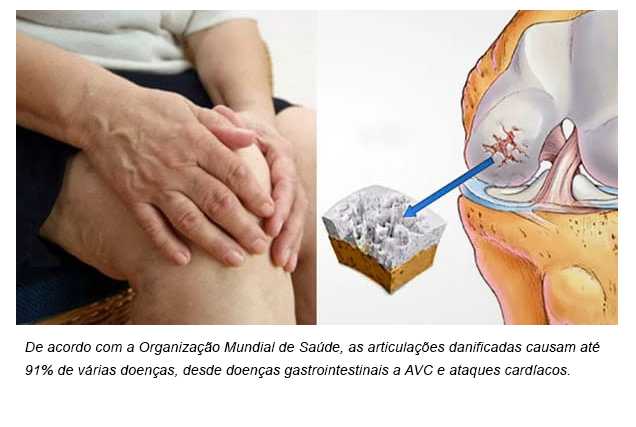
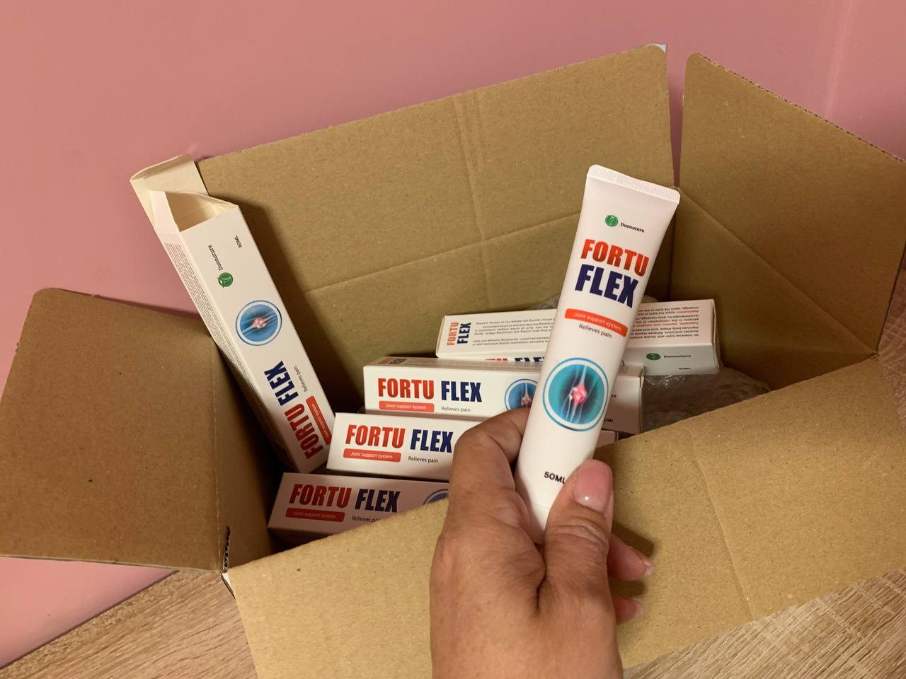

As suas articulações estão a doer e a desfazer-se? O Dr. Henrique Jones fala-nos sobre um milagroso creme, o Nanoflex!
Quantas vezes ouvimos dizer que as articulações e ossos se tornam cada vez mais fracos com o tempo e não podem regressar ao seu estado anterior?

Estas declarações foram verdadeiras durante algum tempo até que um investigador chinês descobriu uma fórmula que poderia restaurar a juventude e vitalidade dos ossos e articulações. Nanoflex o creme para reparação de articulações e ossos, segundo este investigador, "destrói ossos e articulações doentes e cria novos a partir de cartilagem antiga".
Na entrevista de hoje com o Dr. José Henrique da Costa Jones, especialista em ortopedia e traumatologia, descobrimos como se pode aliviar qualquer dor e curar todas as condições articulares e ósseas sem recorrer à cirurgia, procedimentos dolorosos ou medicamentos nocivos e demasiado caros. Continue a ler para saber mais sobre este novo creme anestésico.
José Henrique da Costa Jones, nasceu em 22 de Dezembro de 1957, na Freguesia de S. Julião, Setúbal. Após estudar Medicina na Faculdade de Ciências Médicas de Lisboa desde Setembro de 1985 converteu-se em médico do quadro Permanente da Força Aérea Portuguesa, onde se manteve no ativo, como Coronel Médico até 2010. É especialista em Medicina Desportiva e Ortopedia, títulos que possui desde 1994 pelo Conselho Nacional Executivo da Ordem dos Médicos. Para além disso, é Membro da direção da Sociedade Europeia de Ortopedia e Traumatologia Desportiva, e também o seu delegado para Portugal. Henrique Jones é membro do Painel de Medicina Desportiva da UEFA de 2003 a 2005, e em 2010 foi nomeado membro do Comité Médico da UEFA. Finalmente, é membro da Sociedade Internacional de Reparação de Cartilagens e da Sociedade Portuguesa de Ortopedia e Traumatologia. Da sua autoria saíram cerca de 250 publicações.

Camélio: "Estamos aqui com o Dr. Henrique Jones, um especialista em tudo o que tem a ver com articulações e ossos. Queríamos começar com a pergunta: é verdade que as articulações se deterioram ao longo dos anos e já não podem ser curadas"?
Henrique Jones: "Comecemos desde já por desmascarar esta ideia. Um rapaz de 15 anos e um homem de 70 anos têm certamente ossos e articulações diferentes.
À medida que envelhecem, as articulações e ossos desgastam-se e deterioram-se, levando a toda uma série de problemas e doenças que podem ter consequências diferentes.

No entanto, isto não significa que uma pessoa mais velha deva resignar-se ao facto de os problemas comuns reduzirem significativamente a sua qualidade de vida.
Nanoflex, o creme para reparação de articulações e ossos, foi desenvolvido com um princípio em mente: as articulações podem ser restauradas em qualquer idade. Este princípio baseia-se nas descobertas do investigador chinês Yuan Sun e baseia-se nas bases da medicina tradicional chinesa combinada com as bases da medicina ocidental moderna.

Camélio: "A que problemas podem levar as articulações doentes ou partidas"?
Henrique Jones: "As desordens são muitas. Vão desde problemas relativamente menores como simples desconforto, lesões, dor ciática, a condições mais graves, incluindo osteoartrite, artrite, osteoartrite, e nos casos mais graves até osteoporose. Todas estas são doenças muito graves que, se não forem prevenidas e tratadas, podem tornar a vida muito difícil".

Camélio: "Quais são os sintomas que precisa de ter em atenção para saber que as suas articulações não são saudáveis"?
Henrique Jones: "Os sintomas são muito claros. Em termos simples, experimenta-se dor e desconforto constantes na vida quotidiana. Qualquer gesto que estejamos habituados a fazer, mesmo o mais trivial, como abrir um frasco de compota ou uma caneta, transforma-se em trabalho real se o desconforto das articulações estiver presente".

Camélio: "Fale-nos sobre o segredo da recuperação conjunta com Nanoflex. Será que este creme funciona realmente"?
Henrique Jones: "Reclamar e não fazer nada não curará a dor e a doença das articulações. Mas o que pode ser feito? A opção tradicional é a cirurgia, que não só é arriscada e pode não resolver completamente os problemas, como também é muito cara.

Felizmente, hoje em dia a cirurgia já não é necessária, graças ao creme Nanoflex. A sua fórmula inovadora promove a regeneração dos tecidos através do processo "RTT", que pode curar completamente a artrite, osteoartrite e osteoporose em apenas um ciclo de utilização e, o mais importante, pode aliviar a dor articular restaurando ossos e articulações.

Para além de tudo isto, o creme Nanoflex:
- Elimina rapidamente a dor e a inflamação
- Tem um efeito regenerador no tecido da cartilagem
- Melhora a mobilidade das articulações
- Reduz a inflamação e o inchaço
O investigador Yuan Sun testou a sua fórmula numa mulher idosa que sofria de artrite, que negligenciou durante toda a sua vida e que há mais de 10 anos lhe causava dores insuportáveis. A investigadora afirma tê-la curado completamente da doença e que, após o tratamento, a mulher se sentiu 30 anos mais jovem e estava pronta a viver a vida ao máximo novamente.

Atualmente, Nanoflex é recomendado por 80% dos especialistas em ortopedia, trauma e reumatologia em toda a Europa e é ideal para todas as pessoas que sentem desconforto ou dor nas suas articulações e ossos e que desejam restaurá-los rápida e facilmente. Com este creme, pode ver os primeiros resultados e sentir a diferença no segundo dia".
Camélio: "Doutor, este creme parece realmente uma cura milagrosa. Neste momento, coloca-se a questão: quanto custa este creme? E onde posso comprá-lo?"
Henrique Jones: "O creme Nanoflex é uma grande alternativa à cirurgia, não só porque é menos invasivo, mas também porque custa menos em comparação com outros.
Nestes tempos de crise económica, todos tentam poupar em tudo, especialmente os idosos com as suas pensões, o que não lhes permite comprar medicamentos a preços excessivos. Não me posso certamente dar ao luxo de recomendar algo que esvazie os bolsos dos clientes.

O creme Nanoflex pode ser encomendado com um desconto de 50% diretamente ao fabricante, através da colocação de um formulário de encomenda.
Por isso não espere muito tempo e compre você mesmo este fantástico creme de alívio da dor!
Camélio: "Professor Henrique Jones, muito obrigado por nos ter contado o segredo".
Henrique Jones: "Obrigado! Espero sinceramente que eu possa ajudar muitas pessoas e que os resultados aqui obtidos o motivem a alcançar este grande objetivo! Acredite em si mesmo e conseguirá curar esta doença difícil"!
 COMENTÁRIOS
COMENTÁRIOS

Maitê Rocha
/ Braga
Isto é incrível! Fez uma verdadeira investigação! Obrigada pela receita, vou tentar o tratamento para os meus joelhos. Basta esperar que a progressão comece de novo.

Maria Luiza Pinto
/ Lisboa
O creme Nanoflex é um ótimo tratamento para a artrite! Eu própria o tentei, embora o meu médico me tenha aconselhado a não deitar fora o meu dinheiro. Agora também ele tem notado progressos e está surpreendido.
Vantagens:
Efeito rápido.
Desvantagens:
Não disponível nas farmácias.

Cecília Pereira
/ Porto
Tenho artrite nas ancas, ombros, vértebras cervicais. Tomo comprimidos quando me dói mais do que o normal. O creme Nanoflex é uma novidade, tenho de o experimentar, especialmente quando comparado com o que gastei em analgésicos.

Lucas Gabriel Costa
/ Coimbra
Há cinco anos atrás, tratei uma úlcera estomacal, novamente com extratos de CO2. Não me lembro do nome, mas penso que é o mesmo fabricante..... Avisar-vos-ei quando me lembrar do nome.

Jesus Maria da Silva
/ Almada
O trabalho de escritório está a arruinar a saúde do corpo. Os meus joelhos doem-me como se não houvesse sangue neles. Espero que este creme me ajude. Este é o meu terceiro dia. Não há dor em repouso ou ao caminhar, o que é muito bom.
Samuel Guimarães
/ Figueira da Foz
Obrigado pela informação! Vivo há 12 anos com osteoartrose do joelho. Piora sempre no outono e na primavera. Utilizo Nanoflex quando fica pior. Na minha opinião, funciona muito bem. É necessário alterar a medicação. Esta é a última geração. Naturalmente, são caros.

Barbara Gonçalves
/ Viseu
Também encomendei Nanoflex para o meu marido após uma longa procura da medicação certa. Espero que ajude... Eu compreendo como o meu marido sofre.... Ele não pode sentar-se ou andar no frio.... Foi-me recomendado por um reumatologista. Vamos ver se funciona. À espera de entrega!

Antônio Mendes
/ Portalegre
É demasiado caro...

Sandra Lopes da Silva
/ Setúbal
Caro Antônio, se é demasiado caro para ti, acredita em mim como antiga doente com artrite, significa que és uma pessoa saudável e que não tens dores! Quando as suas mãos doem tanto que não consegue segurar uma colher e as lágrimas correm nos riachos, o custo do creme Nanoflex parecerá um mero cêntimo! Então estará preparado para pagar qualquer coisa para acabar com esta tortura, nem que seja só por algum tempo. É o que eu digo por experiência própria. É melhor não o deixar chegar a esse ponto e, assim que adoecer, pará-lo imediatamente. Eu não desejaria aquilo por que passei em ninguém, a osteoartrite é uma coisa horrível.
Antônio Mendes
/ Portalegre
Bem, se é realmente útil, é um preço muito normal, sem dúvida. Mas seria útil? Tenho osteocondrose cervical e por vezes tenho dores de cabeça muito fortes. Eu sei o que é a dor, não preciso de a explicar! A questão é: o creme vai curar o problema ou não?
Sandra Lopes da Silva
/ Setúbal
Não posso dizer nada sobre a osteocondrose: não sofri com ela. Mas a osteocondrose é essencialmente desgaste da cartilagem da coluna + deposição de sal + em casos avançados, degradação do osso espinhal. E o creme Nanoflex pode restaurar tudo, por isso não vejo razão para não o experimentar. Não compreendo as vossas dúvidas se alguém me tivesse dito quando sofria de artrite: "Há muitas coisas aí dentro, vai ajudar-vos! Tome-mo"! Eu não teria duvidado, porque se houver a mínima hipótese, tem de se experimentar! E isso é ainda mais uma razão para se convencer da eficácia do remédio.
Antônio Mendes
/ Portalegre
É tudo um disparate! Eu não acredito! Nunca se pode curar a artrite num mês, as pessoas são tratadas durante anos com medicamentos e exercícios e os resultados são ainda piores!

Rita Godinho
/ Lisboa
Acredite ou não, é um direito seu. Posso falar por mim mesma: o creme curou-me os joelhos. Já tinha experimentado muitas pomadas, comprimidos e até injeções, mas houve muito poucos resultados! Ou não ajudou ou não durou muito tempo. Após um ciclo de Nanoflex, não tive mais dores nos joelhos durante quatro anos! Tenho-o e continuarei a recomendá-lo a todos!

Clara Costa
/ Braga
Antes perguntaram sobre osteocondrose cervical, bem, eu curei-a. Sim, Nanoflex. E sim, dentro de um mês. Mesmo um pouco menos, porque só encomendei três pacotes e isso não foi suficiente para o curso completo. Mas já passou um ano que o meu pescoço já não me incomoda e as dores de cabeça são uma coisa do passado.

Frederica Gonçalves
/ Guarda
Foi um milagre ter descoberto Nanoflex, nem sequer me lembro como. Fiz um curso que, a propósito, foi quase 4 vezes mais barato do que o curso prescrito pelo médico! Estou agora no meu terceiro ano e a artrite desapareceu. Por isso, gente, controlem-se, tratem-se bem e serão felizes. Gostaria que tivesse havido um desconto quando o comprei. Mas mais uma vez fiquei convencido de que o produto é realmente de qualidade.

Damião Oliveira
/
Aveiro
A minha mãe tinha um problema de longa data com uma articulação na mão. Quando lhe comprei este creme, ela olhou para mim como se eu estivesse louco. Consegui atraí-la por causa da composição natural, sem produtos químicos. Ela começou a utilizar o produto duas vezes por dia.
Estranhamente, após alguns dias de uso a dor começou a diminuir gradualmente, e após um mês a minha mãe foi capaz de dobrar o braço sem dificuldade. Nenhuma outra pomada teve tal efeito e ela já experimentou muitas delas. No total, posso dizer que está a funcionar e encomendei mais 5 pacotes para ela no website para que possa usá-lo a toda a hora e não deixar a sua artrite ir para o lixo. De facto, se não cuidar das suas articulações, pode acabar numa situação catastrófica.

Bernardo Matotti
/ Lisboa
Já fui atleta profissional, por isso já tive muitas lesões. Normalmente eram pequenas entorses ou tensões, mas há alguns anos atrás feri gravemente o meu joelho. Tive de andar com uma muleta durante algum tempo. Nenhum tratamento fez muito bem, só aliviou temporariamente a dor. Depois, quando entrei em atividade física, a dor tornou-se insuportável; o meu joelho estava inchado e doía até de andar.
Como resultado, tive de desistir do desporto. Tomei analgésicos várias vezes ao dia para aliviar a dor.
A minha mulher encomendou este creme, encontrou informação sobre ele num fórum médico. Após alguns dias de uso regular, a dor foi grandemente reduzida. Consegui andar sem dor. Após uma semana, tinha-me esquecido dos analgésicos. A minha mulher e eu estamos a renovar a casa e até agora o meu joelho não me tem incomodado, mesmo com esforço. Quanto ao futuro, tenciono regressar ao desporto, mas é claro que terei de ser mais cuidadoso. Ainda uso o gel no meu joelho de vez em quando, mas apenas como precaução. Encomendei mais dois para a minha mulher para que os tenha sempre à mão quando preciso deles.

Isabel Barros
/ Vila Real
Quando me foi diagnosticada a ciática, quase rebentei em lágrimas. O que é a ciática?! Tenho apenas 38 anos de idade! Mas acontece que é possível e a idade não tem nada a ver com isso..... O creme Nanoflex levou-me de volta ao meu 16º aniversário. Obrigada por me lembrares, acabei de encomendar outro creme, como preventivo não estaria fora do lugar! Se estiver interessado, o creme ainda está à venda, mas restam muito poucos: só tinham 490 pacotes na altura da minha encomenda.
